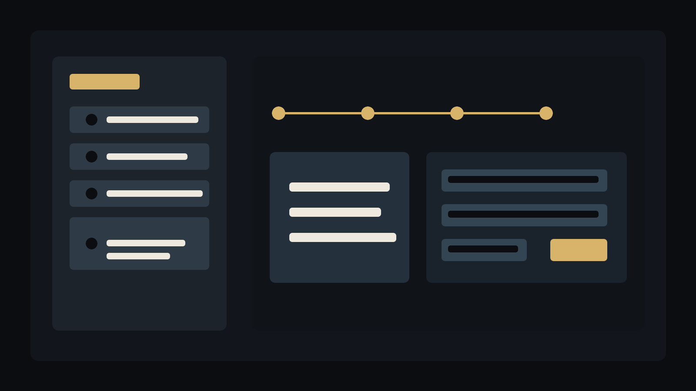

重复录入
账单 PDF、发票申请模板和协同办公表单之间存在大量重复字段，人工录入容易耗时且出错。
自动化案例
一个匿名化的企业内勤工作流样本：从账单 PDF 识别、模板填充、协同办公表单录入，到附件上传和提交审核，把重复性财务录入压缩成可监督的自动化流程。

账单 PDF、发票申请模板和协同办公表单之间存在大量重复字段，人工录入容易耗时且出错。
业务模板会更新，发票单位、商品名称、发票类型等字段需要随模板变化同步到自动化逻辑。
自动化只负责前置整理和提交，最终判断仍交给财务审批链路，避免把风险藏在脚本里。
读取待处理 PDF，提取公司名和金额，必要时由操作者确认。
从模板内置客户信息中匹配税号、地址电话、开户行账号等字段。
按最新表格格式写入电子发票类型、申请单位、商品名称和金额。
登录协同办公系统，打开申请流程，填写标题、单位、类型并上传附件。
提交给财务审核，不绕过组织内既有审批与归档规则。
支持账单扫描、OCR 提取、客户信息匹配、Excel 模板填充、申请单填写、模板与原始账单上传。
新增红冲入口，可按原因、蓝字发票号、金额和附件填写红字发票申请单，适合重开等后续处理场景。
页面不展示真实单位属性、客户名称、发票号码、纳税信息、登录账号、系统地址、验证码机制或内部审批人信息。
案例重点是把重复劳动自动化，而不是替代财务审核。提交后的审批、纠错和归档仍由组织流程完成。